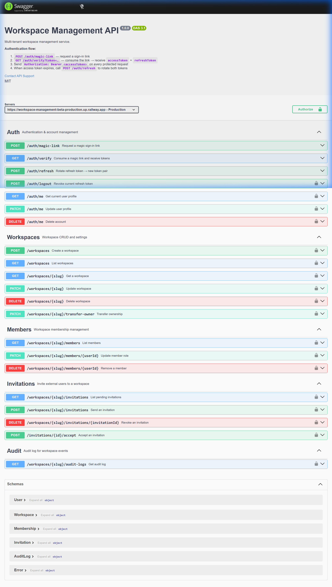
Townhall API
Built a production-ready multi-tenant workspace management REST API with passwordless auth, role-based access control and real-time email invitations, deployed live on Railway.
AI-driven Software Engineer
learning ✦ exploring ✦ experimenting
I'm an AI Engineer working on computer vision, LLM-powered systems and applied machine learning. I currently work at The Data Island, where I help develop production computer vision pipelines for retail analytics and industrial surveillance.
My research interests include deep learning, multimodal systems, edge AI and robotics, with work accepted and under review at peer-reviewed venues.
BS in Computer Science and Engineering
January 2022 - December 2025
Major: Artificial Intelligence
Higher Secondary Certificate (HSC)
2018 - 2020
Group: Science

Built a production-ready multi-tenant workspace management REST API with passwordless auth, role-based access control and real-time email invitations, deployed live on Railway.
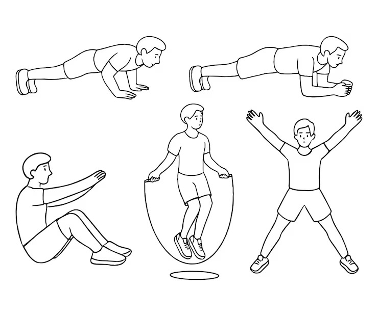
Built an on-device Android app for real-time pose and hand tracking to analyze form, count reps and provide posture feedback. Added gesture-based controls and per-user calibration with robust rep quality scoring.
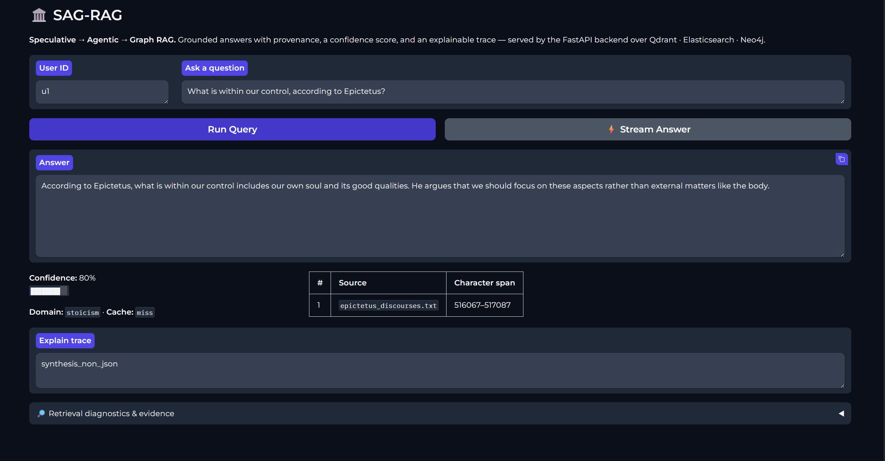
Built a RAG system combining speculative query planning, hybrid retrieval, reranking and evidence-grounded synthesis with provenance tracking for reliable answers.
Additional Projects
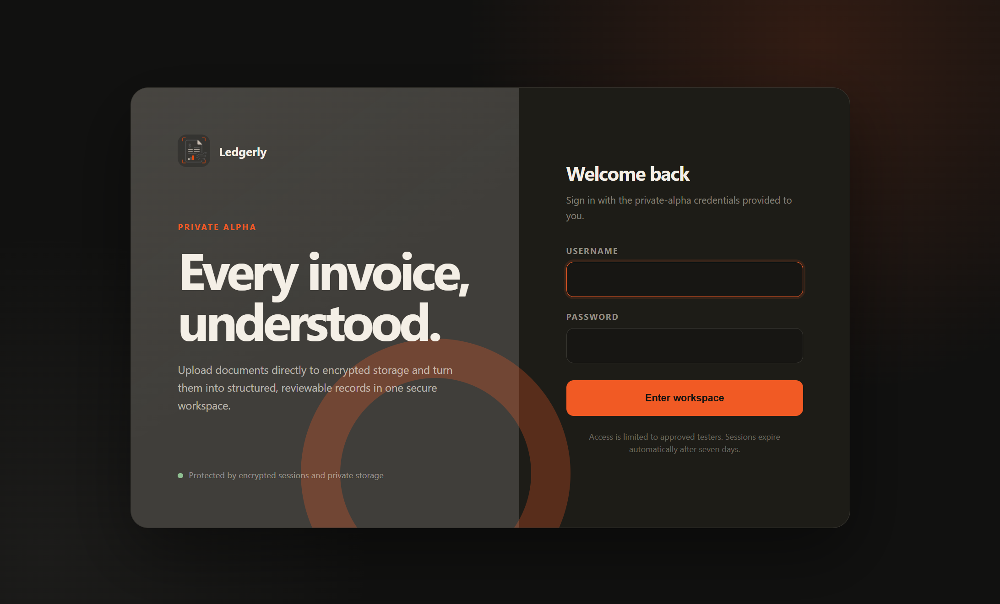
Built a serverless AI invoice processing platform with direct uploads, structured extraction, validation, human review and monitoring.
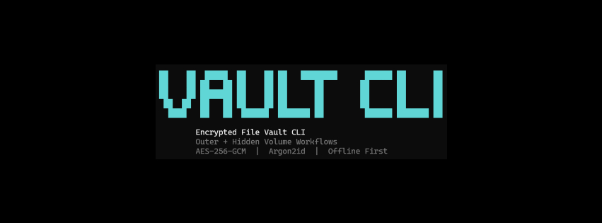
Built a security-focused Python CLI for encrypted file vaults with outer and hidden-volume workflows, including authenticated encryption, passphrase-based key derivation, integrity verification and streaming file handling.
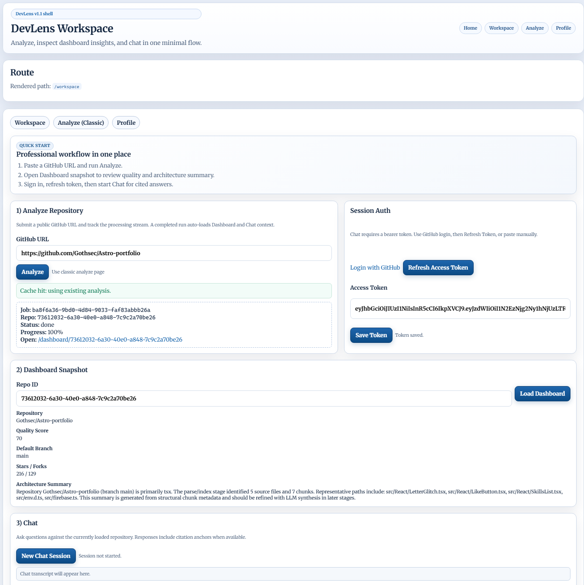
Built a full-stack AI-powered repository intelligence platform that analyzes GitHub codebases and delivers architecture dashboards plus retrieval-augmented chat over indexed code.
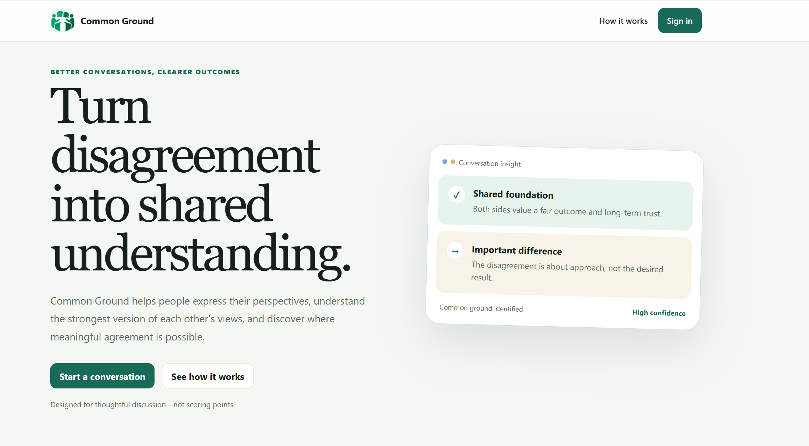
Built and deployed a full-stack AI-assisted deliberation platform that transforms multi-participant positions into grounded steelmans, shared foundations, and clearly classified disagreements. Implemented secure authentication, moderation, privacy-aware exports, email notifications, automated quality benchmarks, and AWS backups and monitoring.
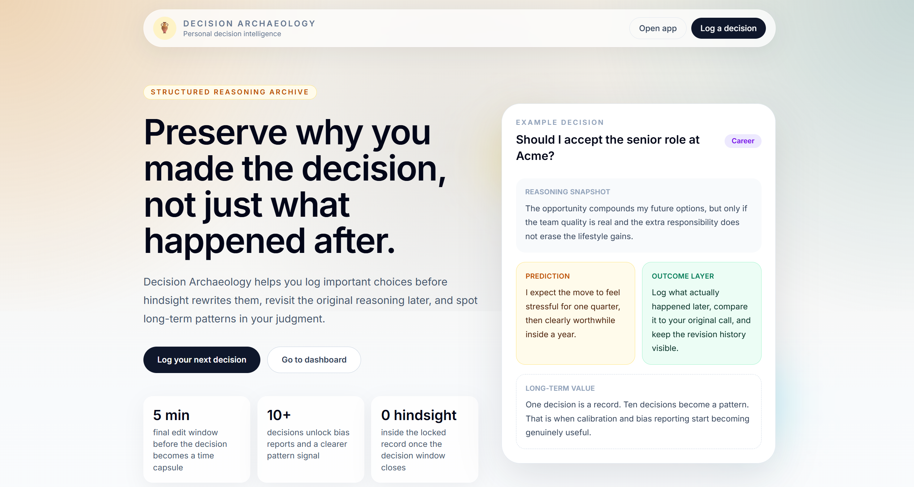
Built a full-stack decision intelligence platform for capturing time-locked decisions, tracking outcomes and surfacing reasoning patterns through AI-powered analysis.
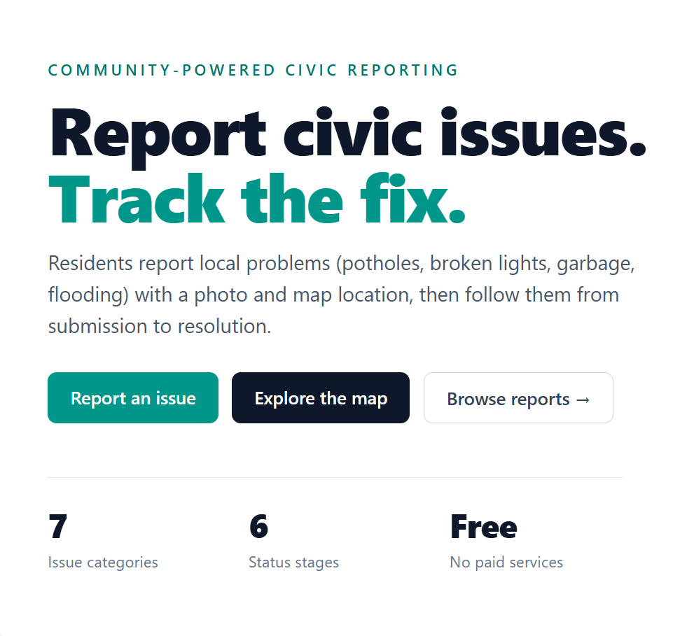
Built a full-stack civic-issue reporting platform with map-based reporting, community verification and a role-gated admin workflow that tracks each report from submission to resolution.

Built a production-style research automation platform with multi-node planning, evidence gathering, analysis and citation-aware report generation with live progress tracking.
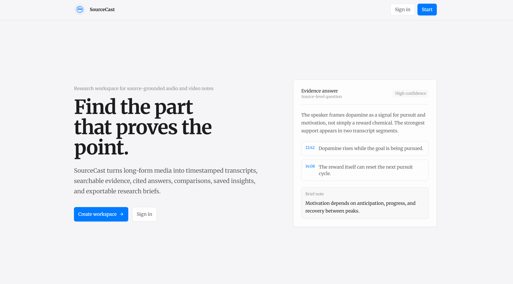
Built and designed an AI-powered research workspace that turns long-form audio and video sources into timestamped transcripts, searchable evidence and citation-backed answers.
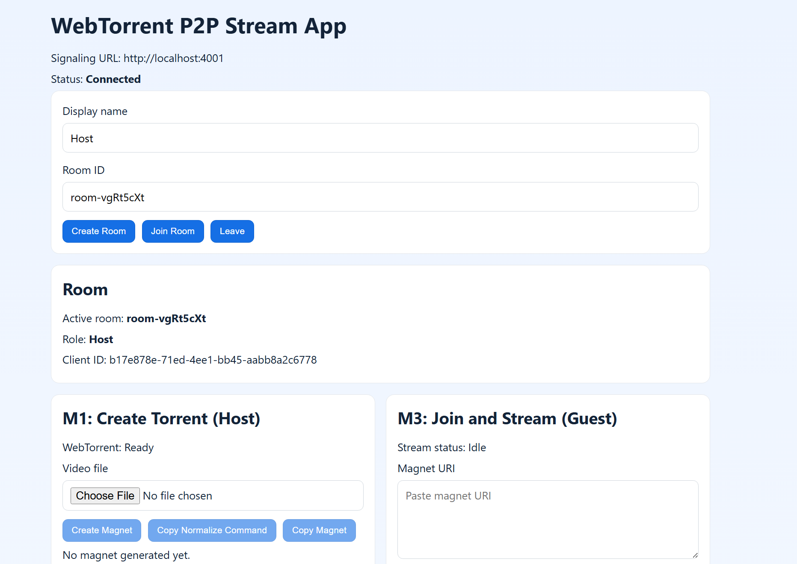
Built a browser-based P2P watch-party streaming app with WebTorrent/WebRTC that supports room signaling, synchronized playback, chat, reconnect recovery, tracker failover, subtitle upload (.vtt/.srt) and validation reporting.
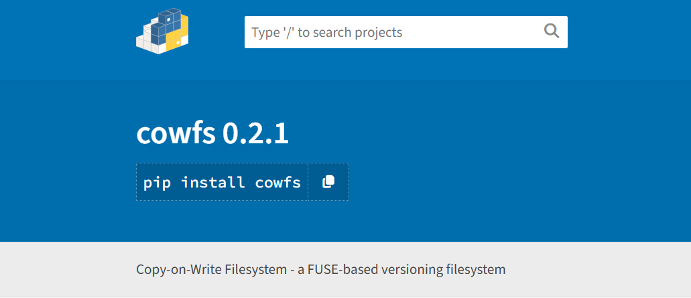
Built a userspace copy-on-write filesystem with FUSE that versions every write, supports snapshots/restore/GC/diff and ships with tested CI/CD and automated PyPI releases.
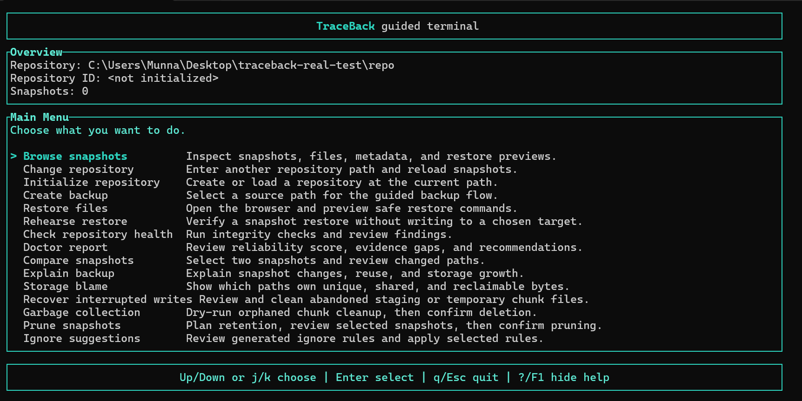
Built a Rust-based explainable backup and restore tool with deduplicated snapshots, a guided terminal UI, integrity checks, restore rehearsal, storage analysis and filesystem remote sync.

Built and deployed a secure computer-vision dataset auditing platform for YOLO and COCO, with asynchronous cloud audits, integrity and leakage detection, actionable reports, and automated CI/CD on AWS.

Built an end-to-end predictive maintenance platform with validation-gated ensemble selection, production inference APIs and a dashboard for model decisions and live checks.

Built an end-to-end fraud detection pipeline with offline training, stream-style scoring, analyst feedback ingestion, online model updates and Prometheus/Grafana observability for latency, anomaly flow and update health.

Built a distributed file service with resumable chunk uploads, HTTP range downloads, checksum validation and reliable state transitions with auth and audit logging.

Built a high-performance real-time log aggregation CLI with multi-source tailing, structured parsing, resilient rotation handling and a live WebSocket dashboard for throughput, severity trends and health metrics.
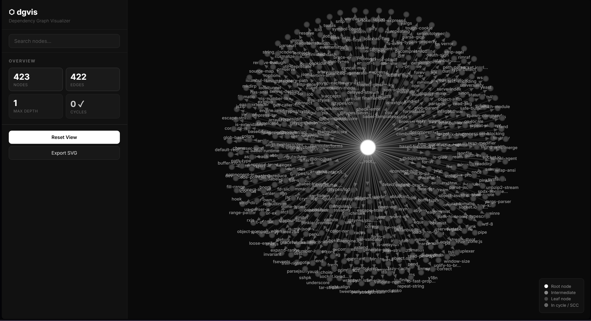
Built a Python CLI that parses dependencies across 7 ecosystems (npm, pip, Go, Rust, Ruby, Maven, YAML) and builds directed graphs from scratch. Detects cycles, ranks critical packages via PageRank, computes blast-radius impact, and runs offline security (OSV) and license (SPDX) audits, all visualized in an interactive D3.js dashboard.
Built an offline-first AI note-taking app in Flutter with rich-text editing, local persistence and on-device summarization using an ONNX-based runtime pipeline.
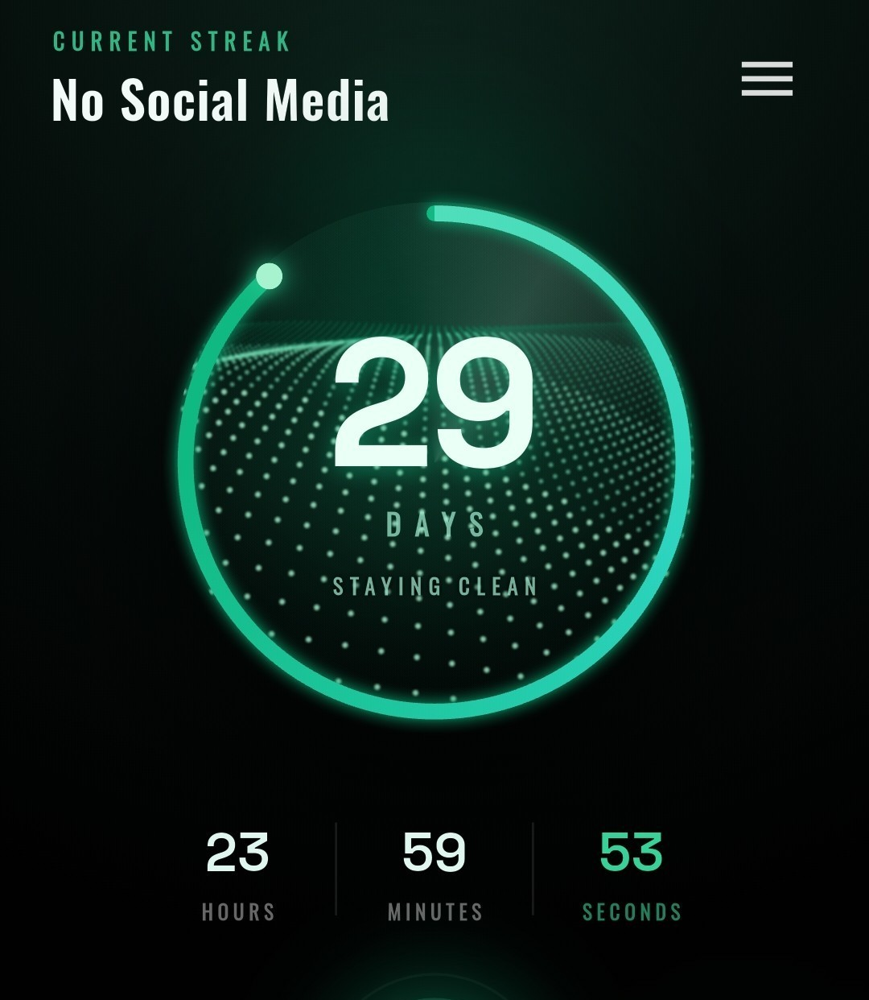
Built an offline Android app in Flutter to track habit streaks with a panic mode, relapse insights, milestone notifications and a native Kotlin home-screen widget.
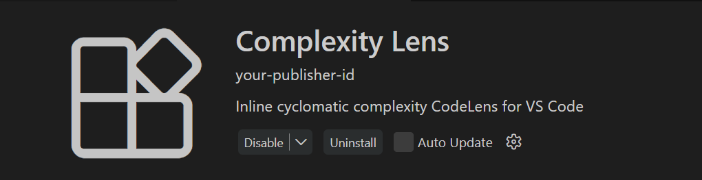
Built a VS Code extension that displays inline cyclomatic complexity via CodeLens with a sortable sidebar report and JSON/CSV export across JavaScript, TypeScript, Python, Java and C# codebases.
Built a research framework for comparing FedAvg, client-level DP-FedAvg and sample-level DP-SGD across synthetic, MNIST and CIFAR-10 datasets. The project includes configurable federated simulations, RDP privacy accounting, IID/non-IID partitioning, experiment sweeps, report generation and a dashboard for privacy-utility analysis.
Built a research framework for joint probabilistic forecasting and anomaly detection on multivariate time series. The project implements MDN-LSTM and regime-aware joint models, full SMD benchmark evaluation, calibrated thresholding, persistence-based false-alarm reduction, CRPS/Energy Score metrics and reproducible experiment reporting with tested pipelines.
Designed and implemented a blockchain protocol for carrying privacy-preserving AI model attestations across chains, combining zero-knowledge verification, permissioned-to-public relay flows and automated end-to-end orchestration.
ACM Transactions on Intelligent Systems and Technology, 2026.
Link2nd IEEE Conference on Secure and Trustworthy Cyberinfrastructure for IoT and Microelectronics (SaTC), 2026.
Link5th International Conference on Sentiment Analysis and Deep Learning (ICSADL), 2026.
LinkChainAttest: Cross-Chain Verification of Privacy-Preserving ML Attestations from Permissioned to Public Blockchains
HAMP: Hardware-Aware Mixed-Precision Quantization via Sensitivity-Guided Evolutionary Search
Edge-Native Autonomous Manipulation: A Hybrid Imitation-Reinforcement Learning Framework on Constrained Hardware
Artificial Dexterity: A Unified Survey of Robotic Hand Architectures, Multimodal Perception and Embodied AI